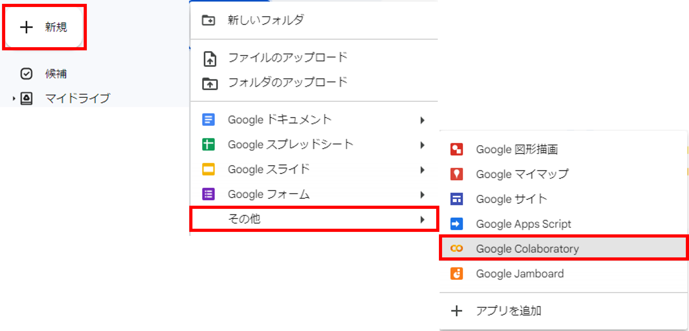
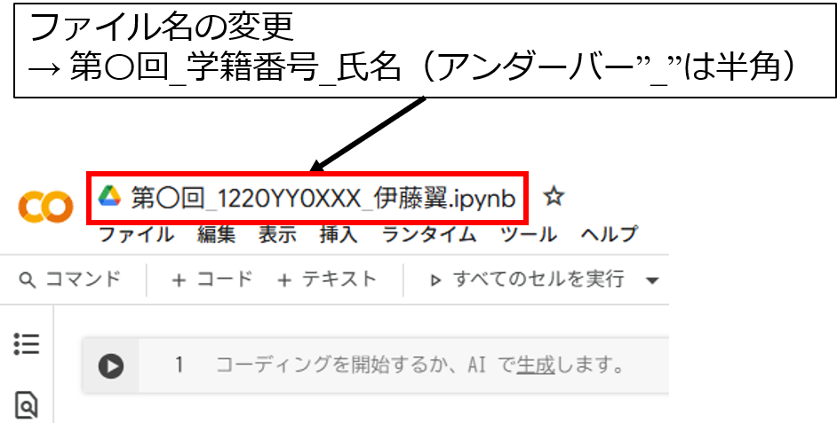
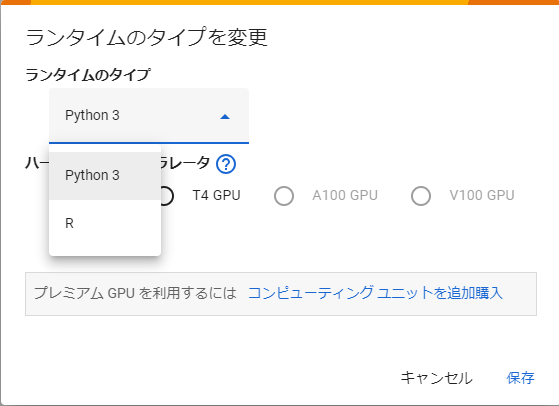
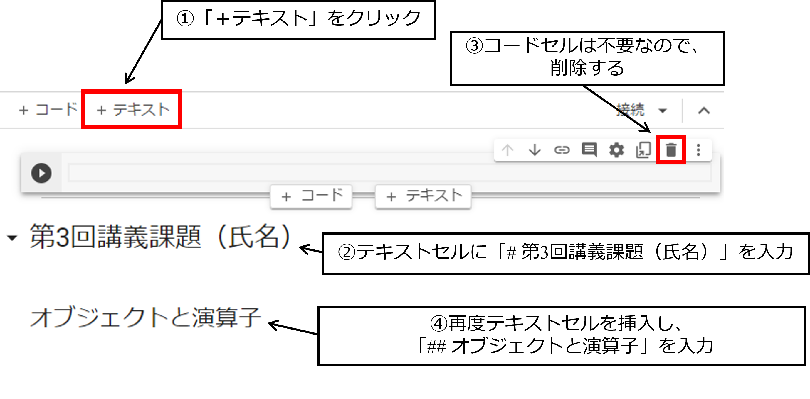
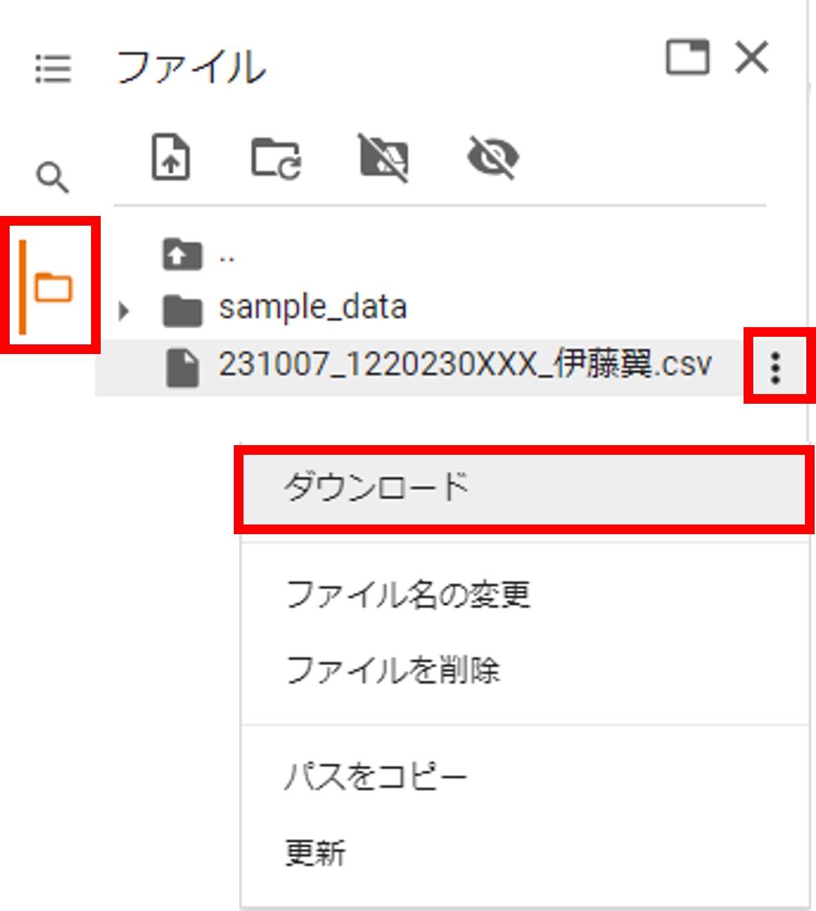

2026年度 経済データ分析演習B2
2026-10-17
出席登録は13:00から14:30まででに登録してください
出席番号
001064
クラスコード
j4osjaqj
R（Colab）で必要な用語を覚える
オブジェクトを理解する
簡単なデータセットを作れるようになる
作ったデータをCSVに変換できるようになる
注意：一部画像の日付などは異なっているので注意してください
理由
第3回講義フォルダ作成

ファイル名の変更

Rへの変更 - ランタイムのタイプ変更


算術演算子 - 四則演算などに用いる演算子
代入演算子 - 変数に数値を代入するときに利用する演算子
オブジェクトを表示 - objects()で実行時点に存在するオブジェクトを表示
オブジェクトのデータ型 - class()で各オブジェクトのデータ型を表示
数値型(numeric) - 1,2,3,・・・, 0.1, -5, etc..
文字列型(character) - リンゴ、AB、東京都、etc..
因子型(factor) - カテゴリー（経済学科を1、国際経済学科を2、etc..）
論理型(logical) - 真（TURE）か偽（FALSE）
[1] "161" "A" "178" "AB" [1] "character"これらのオブジェクトをまとめてデータフレームを作成することもできます
つまり、分析するためのデータもオブジェクトに格納
複数のベクトルオブジェクトをdata.frame()で結合
以下のコードをコピペして実行しましょう
height weight bloodtype
1 161 60 A
2 178 80 AB
3 169 62 O
4 180 74 A
5 172 68 O height weight bloodtype
Min. :161 Min. :60.0 Length:5
1st Qu.:169 1st Qu.:62.0 Class :character
Median :172 Median :68.0 Mode :character
Mean :172 Mean :68.8
3rd Qu.:178 3rd Qu.:74.0
Max. :180 Max. :80.0 保存先

作成したColabの.ipynbファイルをClassroomから提出してください
- CSVファイルの提出はありません